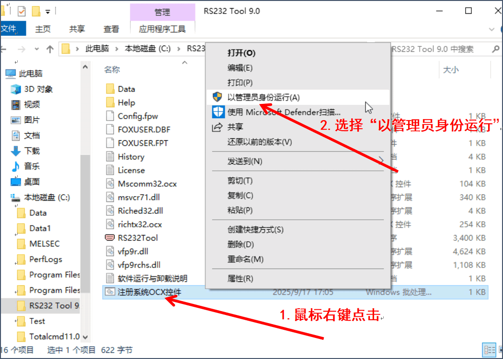

运行与卸载
运行
RS232 Tool 是绿色软件，无需进行安装，只要将下载的文件包解压，在“RS232 Tool X.0”文件夹下，点击“RS232Tool”即可运行。
RS232 Tool 支持全系列 Windows 操作系统，首次运行建议先对软件使用到的 Windows 系统OCX控件进行注册，否则可能不能正常打开运行。
控件注册方法很简单：
右键点击“RS232 Tool X.0”文件夹下“注册系统OCX控件”批处理文件->选择“以管理员身份运行” ->系统提示注册成功。

卸载
删除“RS232 Tool X.0”文件夹，即可完整卸载 RS232 Tool 软件。